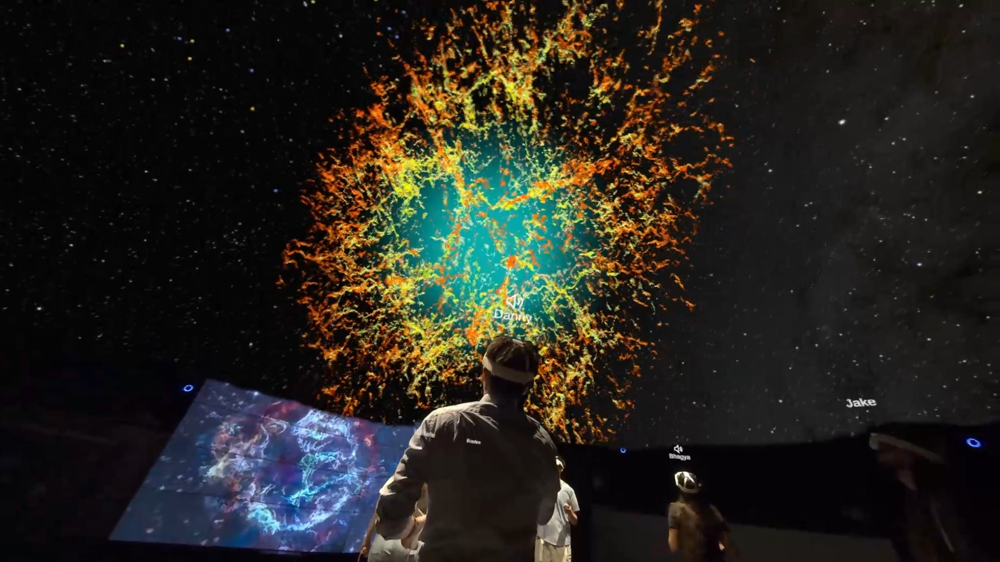

Collab
A practical mixed reality classroom for Meta Quest 3


Collab is a mixed reality classroom app for in-person lectures developed by the Purdue University Envision Center ➔. I was responsible for revamping the UX, interface, and implementing several graphics and mixed-reality specific features.
These features have since been incorporated into the Meta Quest SDK — something I'm told I helped demonstrate the value of!
Website ➔
Camera access workaround
Setting up 30 headsets for classes was once a painful process that would often take 15+ minutes. Our old connection flow had you manually type and enter a room code. Spatial alignment via Meta's shared anchor API was also unreliable.
We wanted to use QR codes to simultaneously connect and align headsets, but Meta did not allow you to access the front RGB cameras (in 2024). However, I circumvented this restriction with a vanilla Android screen capture API to capture and process the displayed passthrough feed.
Using QR codes with this workaround, setup times dropped from 15 minutes to just a couple, and spatial alignment was perfectly reliable.
Depth raycasting
While the Meta Quest can scan the shape of your environment, it's an annoying process, so we avoided using it for the sake of quick setup time. However, this prevented us from placing content anywhere but the floor.
I implemented raycasting against the depth occlusion texture for no-frills content placement. This let, for example, an entomology lecturer place small virtual bugs on a table for their students to see.
Virtual sky/planetarium

The lecturer has the option to replace the ceiling with a virtual sky in order to show large visualizations (e.g. a scale model of the Hubble Space Telescope) that normally wouldn't fit into the room. I implemented this with a large plane that overrides the depth estimation texture used for visual occlusion.
This stemmed from an early exploration into complete environment replacement, but low depth texture resolution and our desire to avoid requiring a room scan made this impractical. However, ceilings are always in the same place no matter the room layout, so slapping a depth-overriding plane three meters above the floor was simple and functional.